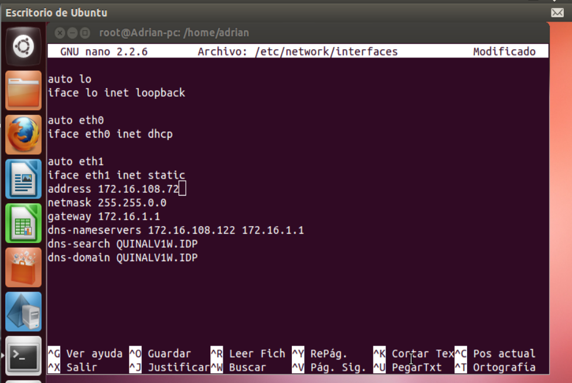
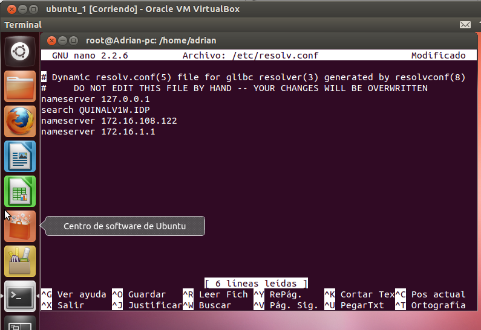
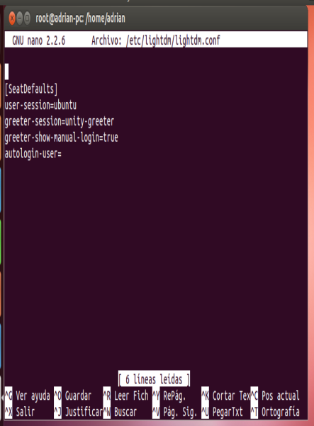
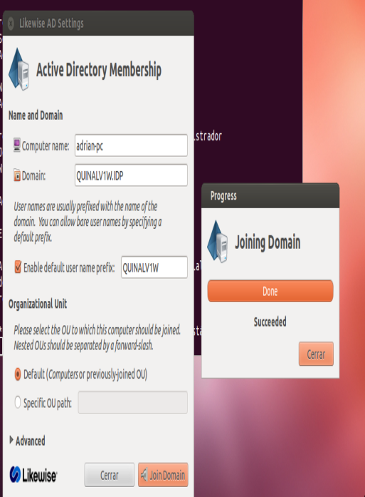
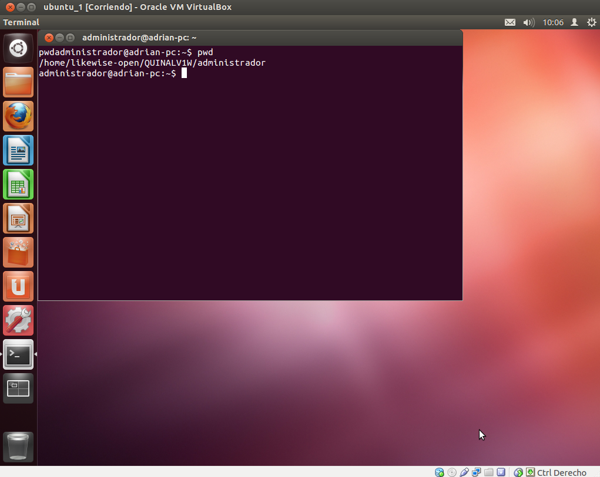
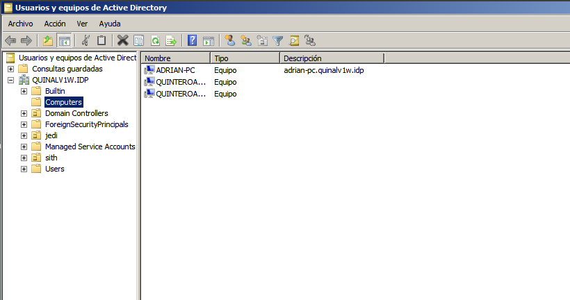

- Módulo: Sistemas Operativos
- Título del trabajo Clientes de Dominio
- Componentes del grupo: Gregorio Adrián Quintero Álvarez
- Curso Académico: 2013/2014
- Fecha de entrega: 3 de Junio de 2014
Para esta práctica usaremos una máquina de Ubuntu la cual usaremos como cliente de dominio y la uniremos al PDC de Windows Server de prácticas anteriores. Para ello es necesario que es la máquina de Ubuntu instalemos LikeWise y lo configuremos utilizando el pdf de dirac-01.
Para conectar la máquina de Ubuntu al PDc hay que tener en cuenta la la hora y fecha, además ambas máquinas tienen que estar en la misma red en modo puente y con una red estática para ello configuraremos mediante comando la interfaces con (nano /etc/network/interfaces), también debemos de configurar los servidores DNS en debian editando el archivo /etc/resolv.conf y después comprobaremos que la configuración se ha realizado corectamente con el comando nslookup
  Ahora vamos a unir el cliente Ubuntu al PDC de Windows Server usando LikeWise para ello lo descargamos desde la web de LikeWise, después de instalarlo y usando un terminal ejecutamos domainjoin-gui y completamos el domain que nos pide introduciento el dominio del PDC, luego nos pedirá el usuario y la contraseña, posteriormente comprobamos que el cliente de Ubuntu se ha añadido correctamente.
 